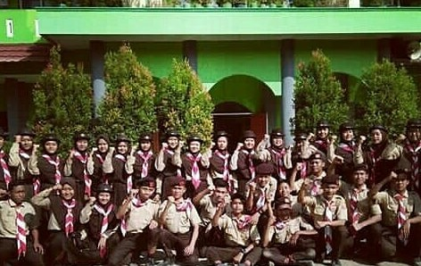

3rd Middle School Phase
The school recommended by my elementary school teacher turned out to be quite good. I was admitted to SMP Negeri 1 Maos, which, if I may say so, was considered the second-best junior high school in our area. My mother had attended the school that was regarded as the best. Whether by coincidence or not, I always felt somewhat challenged by that fact.
Up to this point, I was still not entirely sure whether I had any academic potential. During my early years in junior high school, my attention was drawn more toward organizational activities. I tried various extracurricular activities, but the most memorable one was Scouting.
There, I learned many things that were never taught in the classroom. Although I was not one of the organization's leaders, I felt that everyone was valued. Relationships with alumni were also well maintained, creating a strong sense of family. It was in this organization that I met someone I deeply admired. He was not very tall, had fair skin, and possessed a distinctive hoarse voice. Unfortunately, time did not give us many opportunities to know him better. He passed away before us. May he be granted the best place by His side.

This junior high school implemented an advanced-class system. Around thirty-four students with the highest academic rankings in the school were placed in the same classroom. Even today, I still have mixed feelings about that system.
On one hand, the advanced class created a competitive and supportive learning environment. Teachers could also more easily monitor students considered to have high academic potential. On the other hand, such a system risked creating an exclusive space that made some students feel superior to others. Without realizing it, new social circles emerged, and a gradual social distance developed between classes.
It was true that most of the school's top ten students came from our class. However, several students from other classes still managed to compete and even rank among the top three. It was a reminder that a person's abilities are not always determined by the label of the class they are placed in.
I still remember how tensions between classes could sometimes become quite heated. There was a student from another class who, for reasons I never understood, often came to our classroom and challenged anyone to a fight. I personally never felt I had any issue with him. Nevertheless, situations like that occurred several times. One of my classmates, Imim, was even involved in a physical fight with a student from another class. I no longer remember exactly what caused it. Looking back now, perhaps it was simply part of the mental training that came with adolescence.
Even so, there was one advantage I truly appreciated as a student in the advanced class. We almost always had homeroom teachers who were among the school's best educators. Of all of them, my favorite was my eighth-grade homeroom teacher, an Indonesian language teacher whom we affectionately called Bu Barbie. She had a gentle, caring personality and always spoke in a calming tone. Perhaps without realizing it, my love for writing and language was influenced by her.
Three years passed much faster than I had imagined. If asked which school period had the best social circle, I would probably answer junior high school. I knew almost all of my classmates well. We grew up together for three years, only to face one thing that is never pleasant: a farewell.
The National Examination came around again. The results were quite good. Interestingly, my highest score was actually in the Indonesian language subject. Whether it was due to Bu Barbie's influence or not, I never really knew. Overall, I graduated ranking seventh in the entire school.
At the graduation ceremony, students who ranked in the top ten received a special award. We were called onto the stage wearing different attire from the other students. The committee also prepared a simple procession: each student gave a flower to their attending parents as a gesture of gratitude.
But that day, the one who came was not my mother. Nor was it my grandmother.
The one who attended was my uncle, a kind figure who had taught me much about being a good example through his actions. I was grateful he came, but I must admit the atmosphere felt a bit awkward. Just imagine, a young boy giving a flower to another man with whom he was not actually very close.
When I saw other friends crying while hugging their mothers, I briefly asked myself if I should cry too. And in the end, I did cry. Not because of the touching atmosphere of the event or because I wanted to follow the others. I cried because I remembered my mother, who could not be present at one of the best moments of my life at the time.
My junior high school years also remind me of one other thing: I almost always cried every time Eid al-Fitr came to an end.
To be honest, I was not an expressive child. I rarely confided in my parents and almost never told them directly that I loved them. But that does not mean I did not think about them. Quite the contrary.
Eid al-Fitr was always the moment I anticipated the most. That was when my father and mother returned to our hometown. We could gather again, go out together, visit relatives' houses, and enjoy the time that had felt so rare for months. Of course, as children, we were also happy because we could get pocket money from the tradisi of greeting elders.
But that happiness always had a time limit.
Usually, one or two weeks after Eid, my father and mother had to return to the city to work. And every time that moment arrived, I always felt the same way. A tightness in my chest that was hard to explain. The feeling of having to part ways again after having just been reunited.
I did not cry out loud. There were no dramatic tears. The tears usually fell silently, without a sound. But precisely because of that, I knew how much longing I held for them.